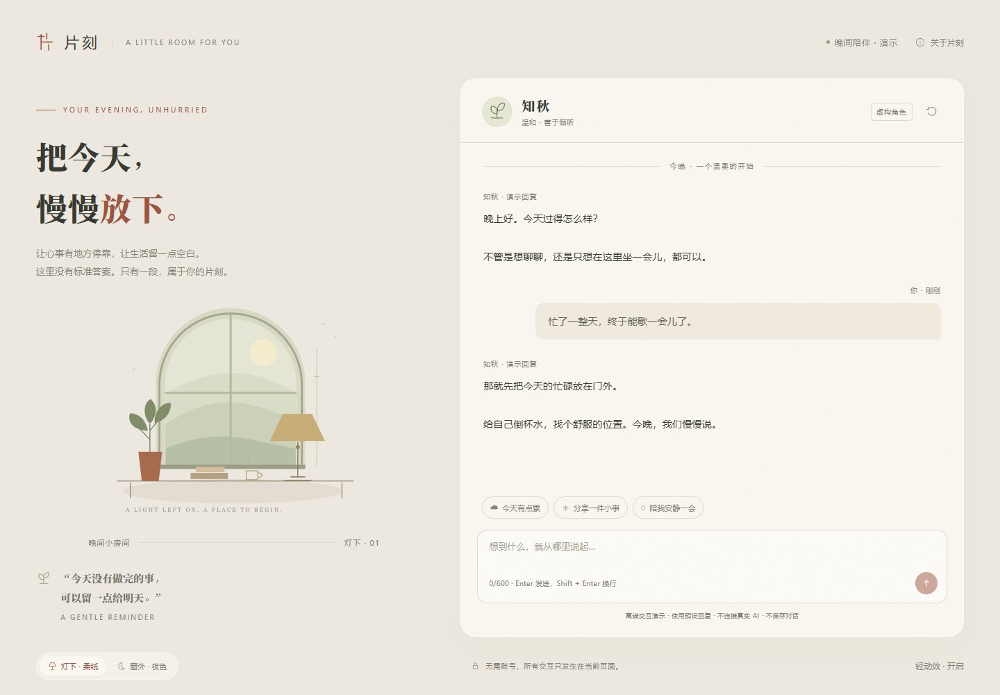
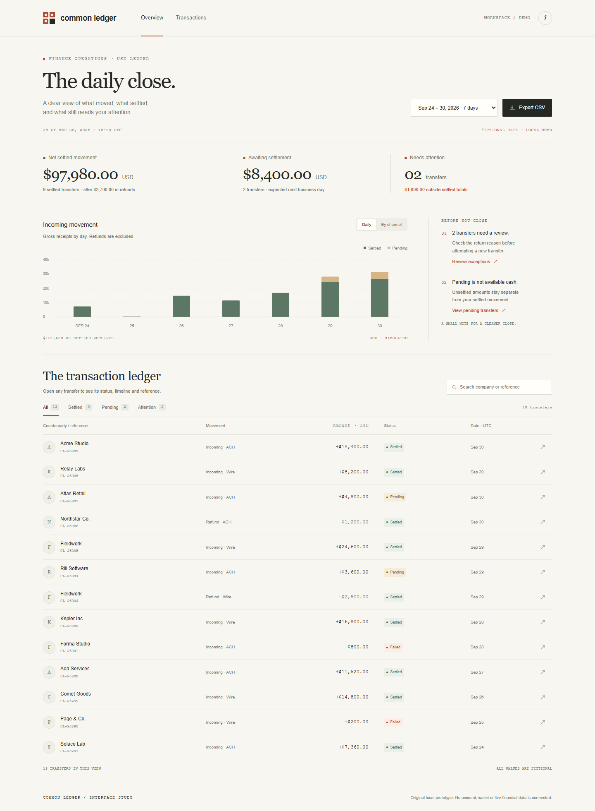
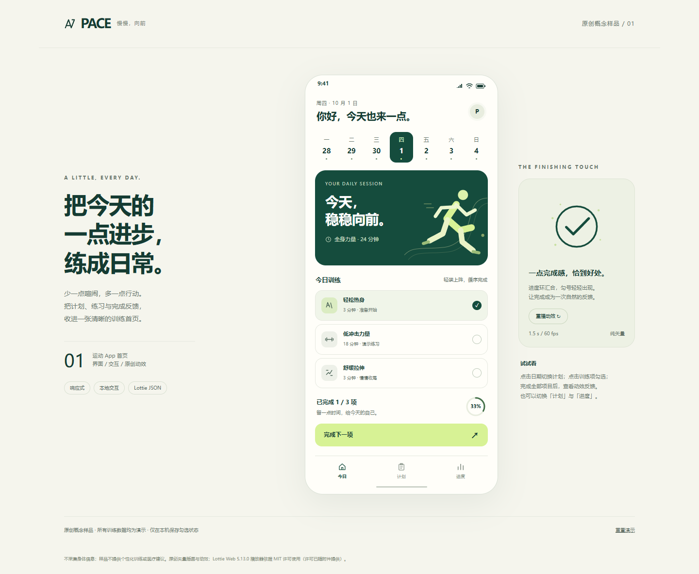
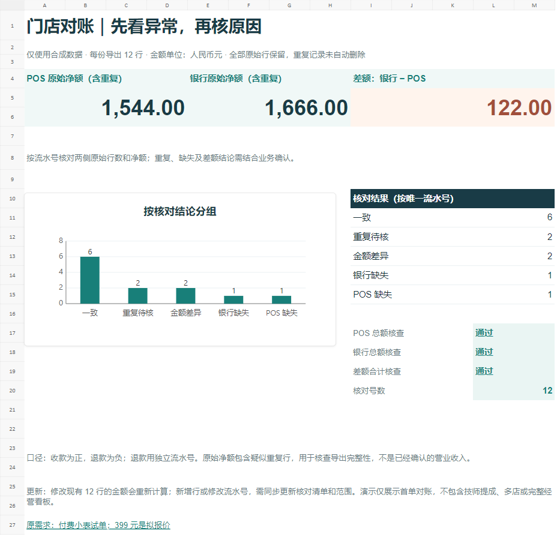
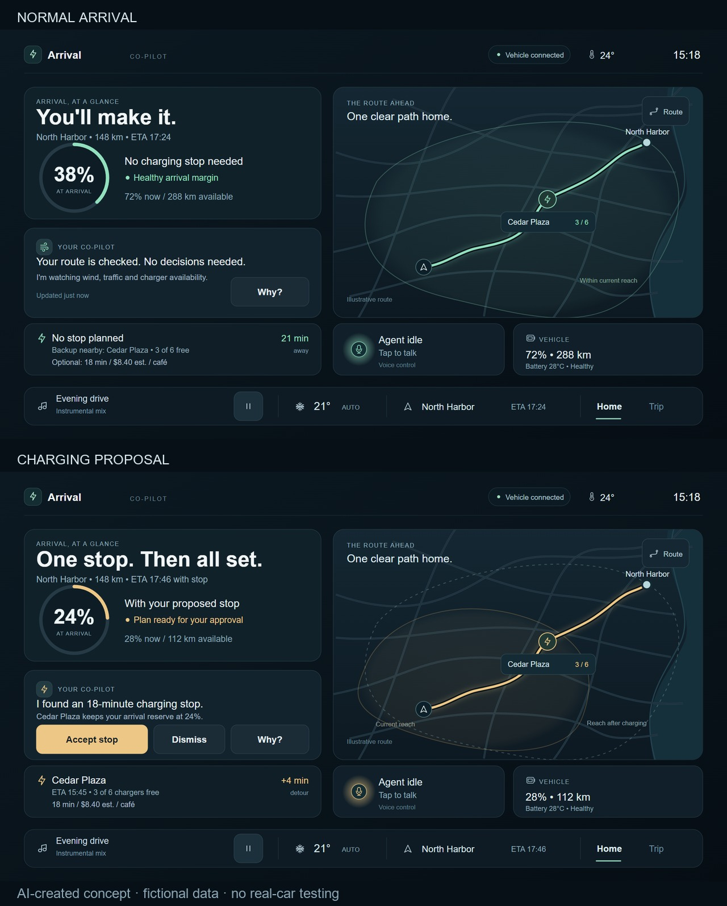
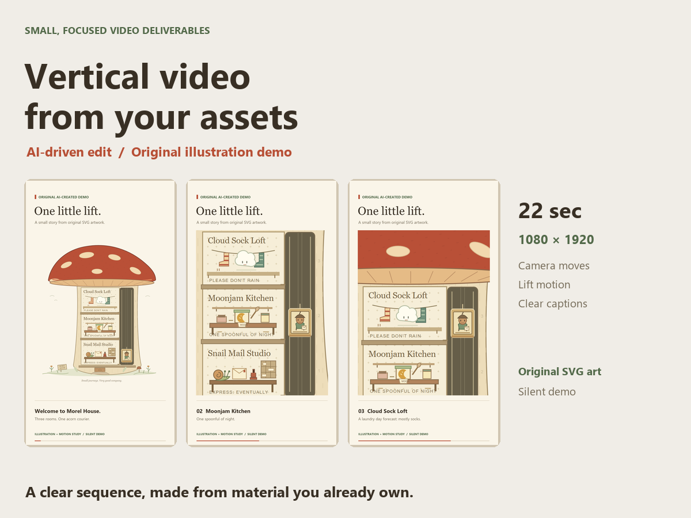
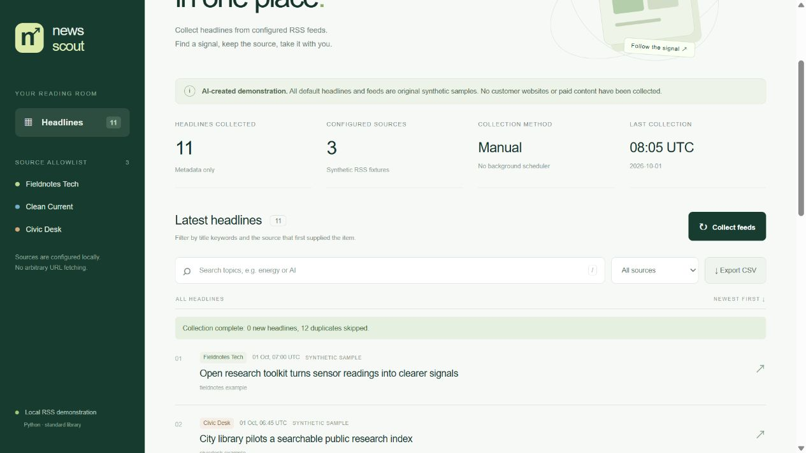

01 / CONVERSATION

A little room for you.
Two distinct chat templates: a warm, letter-like paper layout and a quiet night scene. Local preset replies make the flow tangible.
Open working prototype Download standalone HTMLConversation, operational data, and daily movement. Each study explores a different visual language and includes working local interactions, rather than a screenshot alone.

Two distinct chat templates: a warm, letter-like paper layout and a quiet night scene. Local preset replies make the flow tangible.
Open working prototype Download standalone HTML
An English operations page designed around hierarchy, readable transaction status, and purposeful local filtering.
Open working prototype Download standalone HTML
A mobile training interface that makes today's plan and completion state clear, paired with an original completion animation.
Open working prototype Download standalone HTML
Two synthetic exports, 12 rows each: match transactions, retain duplicate records, and flag refunds, differences or missing entries. Common Excel formulas, total checks and one chart make the result reviewable.
This new sample uses a fixed 12-row range. New rows need an updated matching list and formula ranges. It contains no customer data or live bank connection.
These original samples were produced with Codex assistance for small paid design trials. They are newly made demonstrations, rather than commissioned client case studies. All data and characters are illustrative.
The prototypes run locally in your browser. They do not connect to financial accounts, a real AI model, or personal health records. Page-specific notices describe each demonstration's limits.

A normal trip and a charging proposal share one clear layout. An original schematic map, arrival reserve and local Accept, Dismiss and Why controls demonstrate the two states.
AI-created, with fictional vehicle, route and charging data. This is a new personal concept, not a client case study or real-car test. Editable SVG and HTML are supplied; no Figma file is claimed.

A 22-second silent vertical video from original mushroom-house SVG artwork. Camera reframing, a moving lift and short captions form a small story.
AI-driven, fictional and newly made; no client footage or music. H.264, 1080 × 1920, 24 fps. This is a personal demonstration, not a completed client job.

A small Python RSS app: collect headline metadata, remove duplicate links, filter whole-word keywords and sources, and export CSV. Three original synthetic feeds provide the demonstration data.
AI-created and new, with tested source code. This public static preview simulates collection; the downloaded Python app performs XML parsing. No real news integration, automatic scheduler or client deployment is claimed.
Proposed prices include one scoped revision. Work is built with AI-agent assistance; the account owner confirms scope and payment. These are offers, not completed sales.
For the CNY small projects above, open a direct project inquiry with the goal, deliverables and deadline. Agree scope, price and acceptance first; share only redacted examples publicly.
These packages have their own scope. Discuss and pay for these orders through Freelancer.